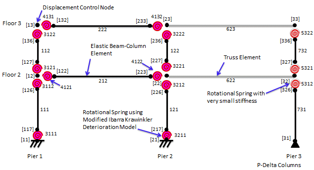
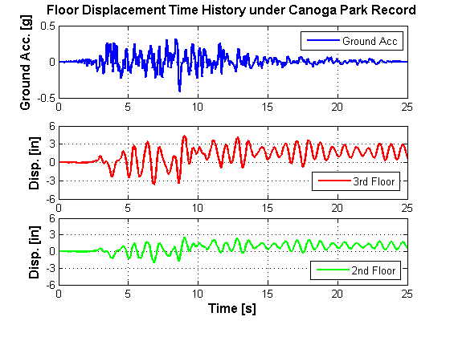

Dynamic Analysis of 2-Story Moment Frame
7 min read • 1,297 wordsThis example demonstrates how to perform a dynamic analysis in OpenSees using a 2-story, 1-bay steel moment resisting frame. The structure is subjected to the Canoga Park record from the 1994 Northridge earthquake. The nonlinear behavior is represented using the concentrated plasticity concept with rotational springs. The rotational behavior of the plastic regions follows a bilinear hysteretic response based on the Modified Ibarra Krawinkler Deterioration Model (Ibarra et al. 2005, Lignos and Krawinkler 2009, 2010). For this example, all modes of cyclic deterioration are neglected. A leaning column carrying gravity loads is linked to the frame to simulate P-Delta effects.
The files needed to analyze this structure in OpenSees are included here:
Supporting procedure files
The acceleration history for the Canoga Park record
All files are available in a compressed format here: dynamic_example_10Oct2013.zip (last update: 10 Oct 2013)
The rest of this example describes the model and shows the analysis results.

The 2-story, 1-bay steel moment resisting frame is modeled with elastic beam-column elements connected by ZeroLength elements which serve as rotational springs to represent the structure’s nonlinear behavior. The springs follow a bilinear hysteretic response based on the Modified Ibarra Krawinkler Deterioration Model. A leaning column with gravity loads is linked to the frame by truss elements to simulate P-Delta effects. An idealized schematic of the model is presented in Figure 1.
To simplify this model, panel zone contributions are neglected, plastic hinges form at the beam-column joints, and centerline dimensions are used. For an example that explicitly models the panel zone shear distortions and includes reduced beam sections (RBS), see Pushover and Dynamic Analyses of 2-Story Moment Frame with Panel Zones and RBS.
For a detailed description of this model, see Pushover Analysis of 2-Story Moment Frame.
The units of the model are kips, inches, and seconds.
This model uses Rayleigh damping which formulates the damping matrix as a linear combination of the mass matrix and stiffness matrix: c = a0m + a1k, where a0 is the mass proportional damping coefficient and a1 is the stiffness proportional damping coefficient. A damping ratio of 2%, which is a typical value for steel buildings, is assigned to the first two modes of the structure. The rayleigh command allows the user to specify whether the initial, current, or last committed stiffness matrix is used in the damping matrix formulation. In this example, only the initial stiffness matrix is used, which is accomplished by assigning values of 0.0 to the other stiffness matrix coefficients.
To properly model the structure, stiffness proportional damping is applied only to the frame elements and not to the highly rigid truss elements that link the frame and leaning column, nor to the leaning column itself. OpenSees does not apply stiffness proportional damping to zeroLength elements. In order to apply damping to only certain elements, the rayleigh command is used in combination with the region command. As noted in the region command documentation, the region cannot be defined by BOTH elements and nodes. Because mass proportional damping assigns damping to nodes with mass, OpenSees will ignore any mass proportional damping that is assigned using the rayleigh command in combination with the region command for a region of elements. Therefore, if using the region command to assign damping, the mass proportional damping and stiffness proportional damping must be assigned in separate steps.
As described in the “Stiffness Modifications to Elastic Frame Elements” section of Pushover Analysis of 2-Story Moment Frame, the stiffness of the elastic frame elements has been modified. As explained in Ibarra and Krawinkler (2005) and Zareian and Medina (2010), the stiffness proportional damping coefficient that is used with these elements must also be modified. As the stiffness of the elastic elements was made “(n+1)/n” times greater than the stiffness of the actual frame member, the stiffness proportional damping coefficient of these elements must also be made “(n+1)/n” times greater than the traditional stiffness proportional damping coefficient.
The recorders used in this example include:
For the element recorder, the region command was used to assign all column springs to one group and all beam springs to a separate group.
It is important to note that the recorders only record information for analyze commands that are called after the recorder commands are called. In this example, the recorders are placed after the gravity analysis so that the steps of the gravity analysis do not appear in the output files.
The structure is analyzed under gravity loads before the dynamic analysis is conducted. The gravity loads are applied using a load-controlled static analysis with 10 steps. So that the gravity loads remain on the structure for all subsequent analyses, the loadConst command is used after the gravity analysis is completed. This command is also used to reset the time to zero so that the dynamic analysis starts from time zero.
For the dynamic analysis, the structure is subjected to the Canoga Park record from the 1994 Northridge earthquake. To apply the ground motion to the structure, the uniform excitation pattern is used. The name of the file containing the acceleration record, timestep of the ground motion, scale factor applied to the ground motion, and the direction in which the motion is to be applied must all be specified as part of the uniform excitation pattern command.
To execute the dynamic analysis, the analyze command is used with the specified number of analysis steps and the timestep of the analysis. The timestep used in the analysis should be less than or equal to the timestep of the input ground motion.

The floor displacement histories from the dynamic analysis are shown in Figure 2. The top graph shows the ground acceleration history while the middle and bottom graphs show the displacement time histories of the 3rd floor (roof) and 2nd floor, respectively.
Example posted by: Laura Eads, Stanford University; Modified: Filipe Ribeiro, Andre Barbosa (09/03/2013)